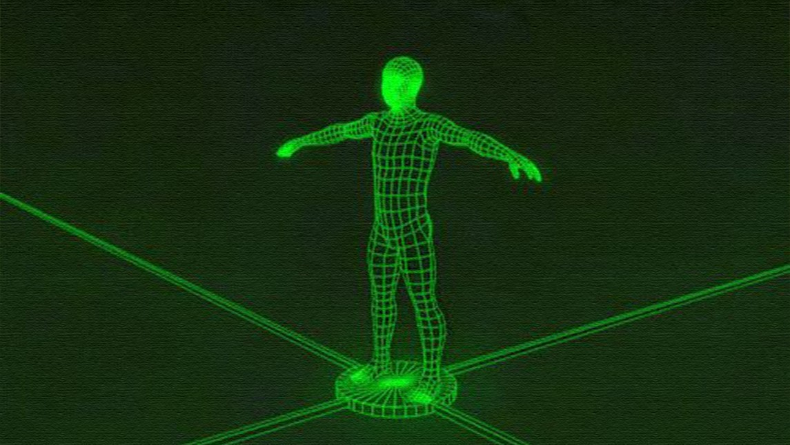

Una pregunta que últimamente recibió todas las luces de la escena, incluso en el mundo científico, es si acaso vivimos en una simulación digital, parecida a un videojuego. Por lo pronto, existen muchas analogías informáticas para expresar la complejidad abstracta que surge al pensar en el Universo, en Dios y en la experiencia humana.
La cosa sería más o menos así: las leyes de la física representarían las reglas de la simulación; es decir, el horizonte de sucesos de lo permisible y no permisible de experimentar en este plano. Por ejemplo, no podríamos desplazarnos por la vida levitando debido a la ley de la gravedad, que acelera todos los cuerpos en dirección hacia al centro de la Tierra.
Pero estas leyes estarían acotadas por el límite de la simulación a este nivel: la VELOCIDAD DE LA LUZ en el vacío. Según la FÍSICA CLÁSICA, la velocidad de la luz en el vacío es la máxima velocidad a la que puede desplazarse cualquier objeto en el espacio.
Desde una perspectiva informática, la velocidad de la luz representaría la MÁXIMA CAPACIDAD DE PROCESAMIENTO COMPUTACIONAL de la simulación.
La velocidad de la luz es la referencia de inmovilidad de la estructura del espacio, y toda manifestación material surge de la desaceleración frecuencial de esta matriz. En otras palabras, el espacio es la matriz atemporal en perfecto equilibrio y, con respecto a esta referencia inmóvil, todo tiene un transcurrir que llamamos tiempo.
Sin embargo, acá aparece una grieta. Se probó a escala micro y macro el ENTRELAZAMIENTO CUÁNTICO: se entrelazaron dos partículas, se alejaron a una distancia suficiente para que su interacción por cercanía sea nula, se modificó el spin de una partícula y la otra modificó su propio spin EN TIEMPO CERO. Es decir, la información se trasladó de un punto a otro instantáneamente.
A priori, se puede decir que: Existen “traslados” más rápidos que la velocidad de la luz. Y, para esto, tiene que existir una estructura que “previamente” lo interconecte todo. Cada punto de la red debe contener la información de toda la red, lo que convertiría la “realidad” en un HOLOGRAMA. La máxima capacidad de procesamiento de la supuesta simulación (la velocidad de la luz) sería relativa y, por lo tanto, existiría algo más allá de la simulación.
La simulación no estaría confinada al mundo que conocemos, sino que se presentaría en otros niveles por fuera de la escena que percibimos. El alma vendría a ser la parte que se ocupa de registrar “informáticamente” cada paso que experimente en una base de datos. La base de datos es el Akasha, una biblioteca digital de almacenamiento de registros álmicos.
El alma experimenta ciclos dentro de diferentes niveles de la simulación, siempre con un respaldo de información en el Akasha. ¿Hasta cuándo? Hasta que sus registros y experiencias quedan lo suficientemente equilibrados (iluminados, en términos espirituales), y se conecta así con el fragmento de la fuente: el espíritu.